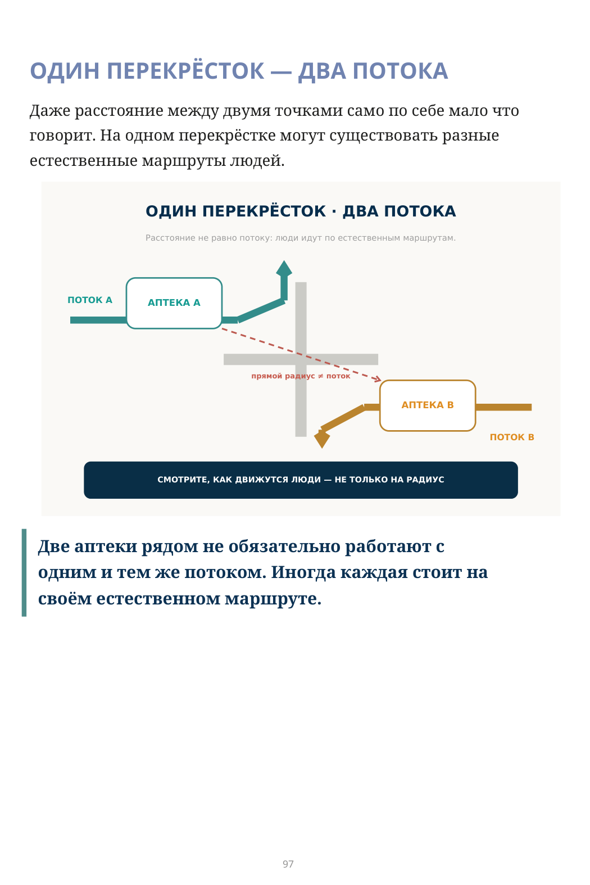
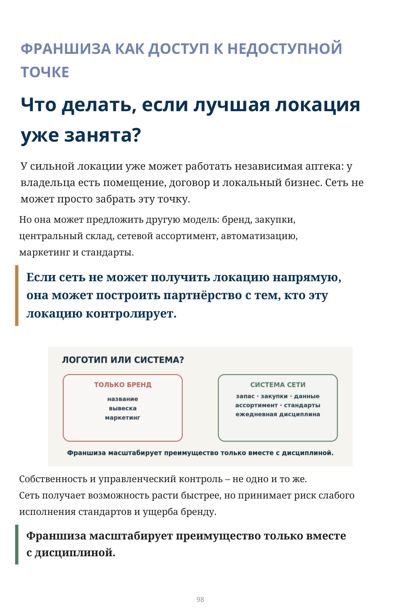
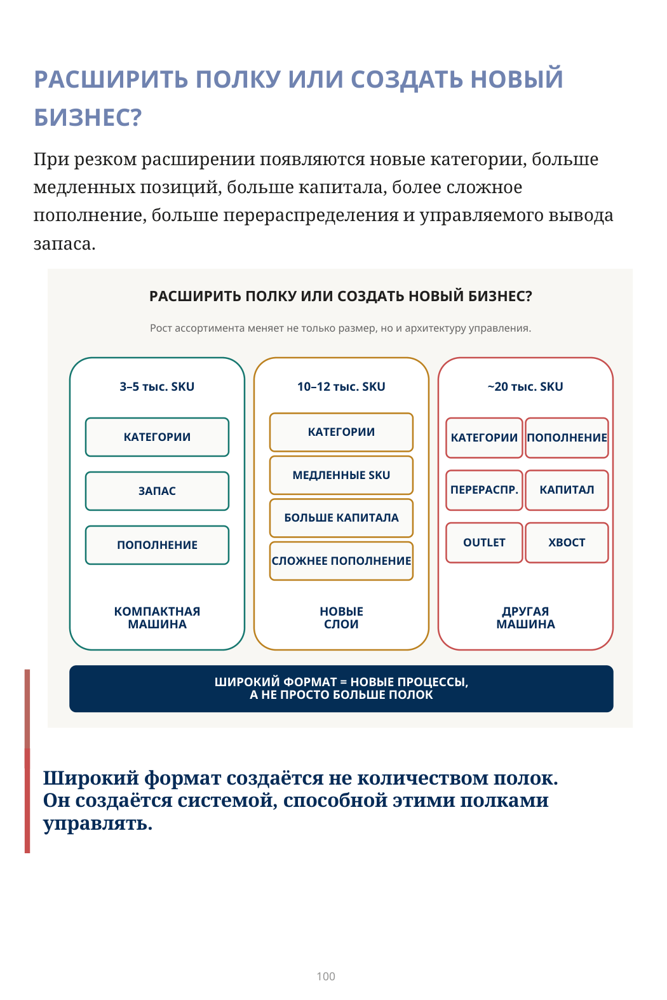
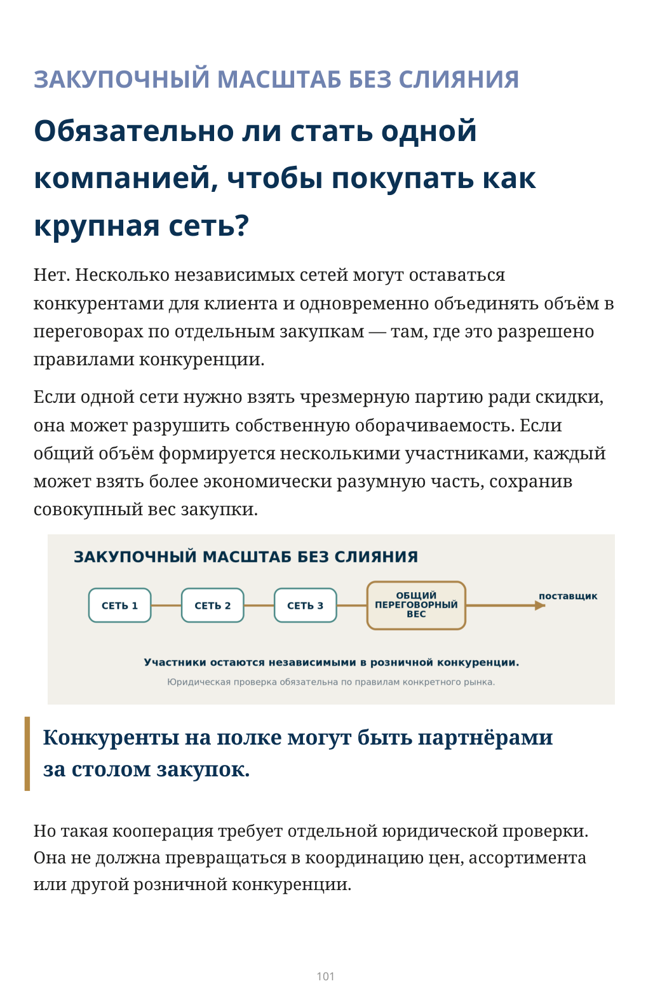
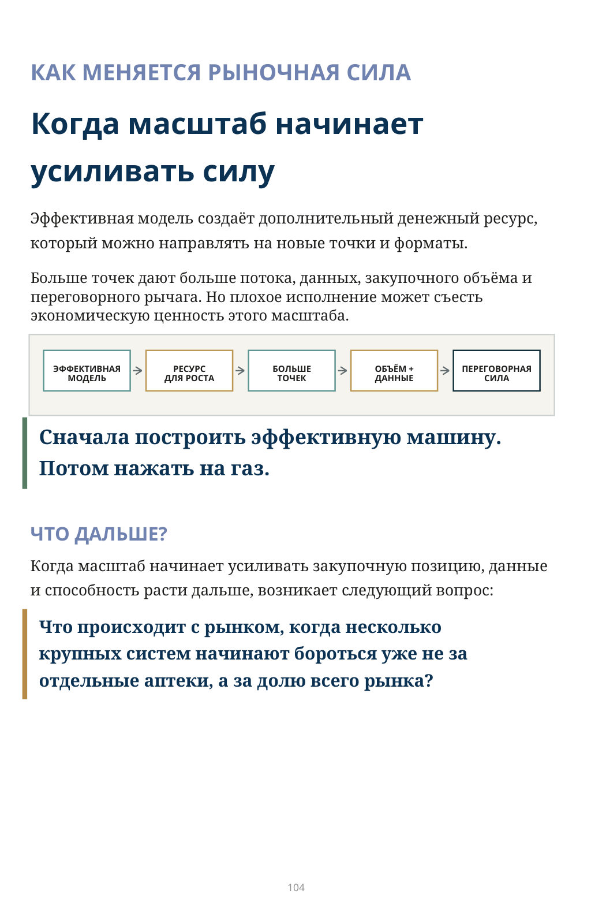

Что именно вы собираетесь масштабировать?
ЭТАП 9 · МАСШТАБИРОВАНИЕ ОПЕРАЦИОННОЙ МОДЕЛИ
Локация, франшиза, широкий формат и закупочные альянсы
Можно быстро открыть много аптек — и так же быстро умножить все существующие проблемы.
Каждая новая точка добавляет запас, команду, локацию, поток решений и риск расхождения со стандартом сети.
Поэтому настоящий объект масштабирования — не количество аптек.
Масштабировать нужно работающую операционную модель.
Когда ключевые функции уже управляются как система, появляются три оси роста:
- больше точек и доступ к новым клиентским потокам;
- больше бизнеса внутри существующей точки;
3.больше закупочной силы — даже без полного объединения собственности.
ЛОКАЦИЯ КАК ДОСТУП К ПОТОКУ
Аптека — это помещение или позиция внутри движения людей?
Сильная локация определяется не только ценой квадратного метра, а качеством и устойчивостью потока: клиника, торговый центр, транспортный узел, парковка, повседневный маршрут.
Аптека может стоять внутри такого объекта, у входа или на естественном пути человека. Главное — находиться внутри движения клиента.
Оценивайте не дешёвые квадратные метры, а доступ к устойчивому потоку.
ЛОВУШКА ДЕШЁВОЙ АРЕНДЫ
Дешёвое помещение становится дорогим, если поток уходит. Новый торговый центр, парковка или другой центр притяжения может изменить повседневный маршрут людей; экономия на аренде превращается в слабую выручку и стоимость закрытия.
Дешёвая локация становится очень дорогой, когда клиенты уходят в другое место.
При открытии смотрите не только на сегодняшний поток, но и на то, кто формирует поток будущего.
ОДИН ПЕРЕКРЁСТОК — ДВА ПОТОКА
Даже расстояние между двумя точками само по себе мало что говорит. На одном перекрёстке могут существовать разные естественные маршруты людей.
ОДИН ПЕРЕКРЁСТОК · ДВА ПОТОКА
Расстояние не равно потоку: люди идут по естественным маршрутам.
ПОТОК A → АПТЕКА A → продолжение естественного маршрута потока A.
ПОТОК B → АПТЕКА B → продолжение естественного маршрута потока B.
прямой радиус ≠ поток
СМОТРИТЕ, КАК ДВИЖУТСЯ ЛЮДИ — НЕ ТОЛЬКО НА РАДИУС
Две аптеки рядом не обязательно работают с одним и тем же потоком. Иногда каждая стоит на своём естественном маршруте.

Описание схемы
FIG_046: ОДИН ПЕРЕКРЁСТОК — ДВА ПОТОКА
Один физический перекрёсток обслуживает два разных потока: поток A продолжает естественный маршрут к аптеке A, поток B — к аптеке B. Смысл: расширение должно учитывать направление потока, а не только радиус.
ФРАНШИЗА КАК ДОСТУП К НЕДОСТУПНОЙ ТОЧКЕ
Что делать, если лучшая локация уже занята?
У сильной локации уже может работать независимая аптека: у владельца есть помещение, договор и локальный бизнес. Сеть не может просто забрать эту точку.
Но она может предложить другую модель: бренд, закупки, центральный склад, сетевой ассортимент, автоматизацию,
маркетинг и стандарты.
Если сеть не может получить локацию напрямую, она может построить партнёрство с тем, кто эту локацию контролирует.
Собственность и управленческий контроль — не одно и то же.
Сеть получает возможность расти быстрее, но принимает риск слабого исполнения стандартов и ущерба бренду.
Франшиза масштабирует преимущество только вместе с дисциплиной.

Описание схемы
FIG_047: Франшиза: логотип или система?
Сравнение двух моделей франшизы: «только бренд» ограничивается названием, вывеской и маркетингом; «система сети» включает запас, закупки, данные, ассортимент, стандарты и ежедневную дисциплину. Масштабируется преимущество только вместе с системой.
БОЛЬШЕ БИЗНЕСА ВНУТРИ ОДНОЙ ТОЧКИ
Рост — это только больше аптек?
Нет. Вторая ось — создать больше бизнеса внутри уже
существующей точки.
У сети уже есть клиентский поток, доверие, логистика, склад, управление запасом и категорийная компетенция. Эту платформу можно использовать для более широкого формата: косметика, уход, медицинские изделия, товары для детей и другие категории, соответствующие поведению клиента и правилам рынка.
Рост — это не только больше аптек. Это больше бизнеса внутри каждой аптеки.
НЕ РАСШИРЯТЬСЯ БЕЗ СИСТЕМЫ
Но здесь особенно легко перепутать расширение с масштабированием.
Для иллюстрации представим три условных формата: 3–5 тысяч активных SKU, 10–12 тысяч и примерно 20 тысяч. Это не универсальные отраслевые границы.
В какой момент «больше» перестаёт быть той же самой аптекой?
При резком расширении появляются новые категории, больше медленных позиций, больше капитала, более сложное пополнение, больше перераспределения и управляемого вывода запаса.
Широкий формат создаётся не количеством полок. Он создаётся системой, способной этими полками управлять.

Точное представление формулы
ШИРОКИЙ ФОРМАТ = НОВЫЕ ПРОЦЕССЫ,
Описание схемы
FIG_048: Расширить полку или создать новый бизнес?
Три масштаба ассортимента — примерно 3–5 тыс., 10–12 тыс. и около 20 тыс. SKU — требуют всё новых функций: от категорий и запаса до перераспределения, капитала, логистики, IT и другой машины управления. Широкий формат — это новые процессы, а не просто большая полка.
ЗАКУПОЧНЫЙ МАСШТАБ БЕЗ СЛИЯНИЯ
Обязательно ли стать одной компанией, чтобы покупать как крупная сеть?
Нет. Несколько независимых сетей могут оставаться конкурентами для клиента и одновременно объединять объём в переговорах по отдельным закупкам — там, где это разрешено правилами конкуренции.
Если одной сети нужно взять чрезмерную партию ради скидки, она может разрушить собственную оборачиваемость. Если общий объём формируется несколькими участниками, каждый может взять более экономически разумную часть, сохранив совокупный вес закупки.
Но такая кооперация требует отдельной юридической проверки. Она не должна превращаться в координацию цен, ассортимента или другой розничной конкуренции.

Описание схемы
FIG_049: ЗАКУПОЧНЫЙ МАСШТАБ БЕЗ СЛИЯНИЯ
Несколько независимых сетей объединяют закупочный объём через общую переговорную функцию, сохраняя собственность и операционную самостоятельность. Масштаб закупки создаётся без юридического слияния участников.
ГДЕ МАСШТАБ НАЧИНАЕТ ЛОМАТЬ МОДЕЛЬ?
Рост становится опасным не тогда, когда точек много. Он становится опасным тогда, когда сеть перестаёт воспроизводить качество своей модели.
- Что стало хуже после роста?
- Что перестало воспроизводиться?
- Где запас растёт быстрее продаж?
- Где локальная свобода разрушает сетевой стандарт?
Сигналы могут появиться в разных местах: новая точка работает иначе, франчайзи копирует бренд без дисциплины, широкий формат обгоняет систему управления, закупочный масштаб заставляет покупать лишнее.
Масштабирование — это проверка повторяемости, а не соревнование по количеству открытий.
Не «сколько точек мы можем открыть?», а «какую модель мы умеем повторить без потери качества?»
- Какие процессы воспроизводятся одинаково в новой и старой точке?
- Локации выбираются по движению людей или по цене помещения?
- Видим ли мы разные потоки даже внутри одного перекрёстка?
- Франчайзи получает систему или только бренд?
- Широкий формат остаётся прежней моделью или уже требует нового бизнеса?
- Как быстро новая точка выходит на нормальный уровень наличия, оборачиваемости и маржи?
- Усиливает ли масштаб закупочную экономику или заставляет покупать лишнее?
- Не ухудшается ли качество модели по мере роста?
ПОТОК → СИСТЕМА → ПОВТОРЯЕМОСТЬ → МАСШТАБ
КАК МЕНЯЕТСЯ РЫНОЧНАЯ СИЛА
Когда масштаб начинает усиливать силу
Эффективная модель создаёт дополнительный денежный ресурс, который можно направлять на новые точки и форматы.
Больше точек дают больше потока, данных, закупочного объёма и переговорного рычага. Но плохое исполнение может съесть экономическую ценность этого масштаба.
Сначала построить эффективную машину. Потом нажать на газ.
ЧТО ДАЛЬШЕ?
Когда масштаб начинает усиливать закупочную позицию, данные и способность расти дальше, возникает следующий вопрос:
Что происходит с рынком, когда несколько крупных систем начинают бороться уже не за отдельные аптеки, а за долю всего рынка?

Описание схемы
FIG_051: КАК МЕНЯЕТСЯ РЫНОЧНАЯ СИЛА
Последовательность усиления рыночной силы: эффективная модель создаёт ресурс для роста → появляется больше точек → растут объём и данные → усиливается переговорная сила.